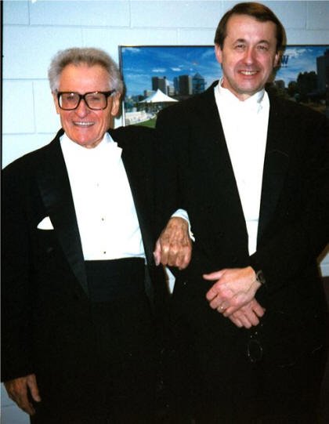
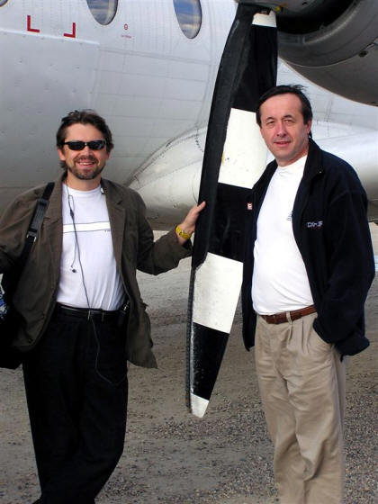
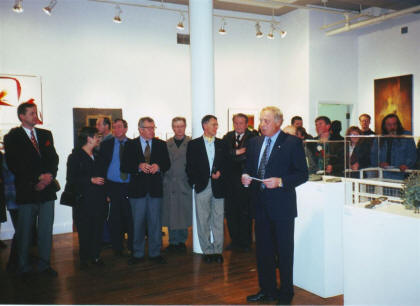
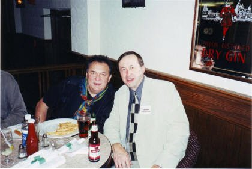
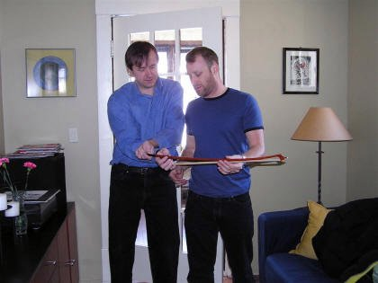
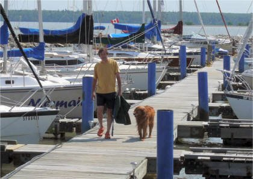

Smyczki dla kontrabasistów
|
|
Zdzislaw Prochownik
Etobicoke ON
email; prochownik@outlook.com or prochownik@hotmail.com
|

{kind=link}
Od 1975 roku mieszkam w Kanadzie. Pochodzę z Bielska-Białej gdzie ukończyłem Liceum Muzyczne i klasę kontrabasu u prof. B. Nancki. Wyższe studia podzieliłem pomiędzy Akademią Muzyczną w Warszawie u prof. T. Pelczara i Uniwersytetem McGill w Montrealu. W 1974 zdobyłem wyróżnienie na Pierwszym Ogólnopolskim Konkursie Kontrabasistów w Poznaniu. Od 1978 roku pracuje jako muzyk kontrabasista w pierwszych pulpitach orkiestr w Edmonton, Montrealu i Winnipegu. Zawsze fascynowała mnie budowa dobrego smyczka. Zacząłem eksperymentować w wolnych chwilach i po jakimś czasie stało się to moją pasją Techniki uczyłem się u znanego Jean Grunbergerera we Francji, ucznia Emila Oucharda.
Zarówno niemiecki jak i francuski smyczek jest skonstruowany z myślą o
dzisiejszych wzrastających
wymogach gry na kontrabasie. Robiąc smyczek koncentruje się od samego początku
na tym, żeby miał silny, jasny, czysty
dźwięk i reagował bardzo szybko.
Każdy smyczek zrobiony jest wyselekcjonowanego drewna Pernambuco, testowanego
ultradźwiękami dla zbadania
giętkości i wytrzymałości. Żabki wykonane są ze srebra i hebanu. Moje smyczki
robione są na wzór najlepszych jakie
znalazłem, są nieco inne. Dla kontrabasistów, którzy są
przyzwyczajeni do cięższych smyczków jest to na pewno szokujące
ale po krótkim czasie szybko się przyzwyczają do szybkiej reakcji lżejszego
smyczka. Po co walczyć z grawitacją,
ryzykować kontuzją jeśli można dokonać tego samego mniejszym nakładem pracy i
wysiłku. Wszystkie moje smyczki mają
dosyć duże wygięcie a dystans pomiędzy włosiem i drewnem jest trochę mniejszy
niż w innych smyczkach, dlatego są one
wskazane dla muzyków, którzy wydobywają dźwięk nie wywierając nacisku .
Wszystkie smyczki posiadają bardzo dobry
kontakt ze struną jak również świetnie skaczą.
Używam
białego kanadyjskiego włosia, które moim zdaniem jest najlepsze.
Francuski model posiada opaskę z gumy lateksowej dla wygody kciuka. Każdy
smyczek jest sprawdzony przed wysyłką
przeze mnie lub moich kolegów podczas prób i koncertów w filharmonii, w której
obecnie pracuje jako kontrabasista..
Sprawdzając moje smyczki zalecam porównywanie ich z innymi poprzez granie
różnych rodzajów trudnych pasaży jak
również słuchanie brzmienia z dystansu kilku metrów. Długość włosia obydwu
modeli smyczków wynosi około 55cm. Gwarantuję znakomitą
jakość i pełną satysfakcję. Wykonuje również smyczki do innych instrumentów.
Mają one podobne
techniczne właściwości i ceny. Moje smyczki są obecnie używane przez
wielu muzyków w liczących się orkiestrach na
całym świecie jak również są polecane i kupowane przez studentów Paula
Ellisona, Francois Rabbath i innych znanych
profesorów kontrabasu.
 Oto
niektóre wypowiedzi:
Oto
niektóre wypowiedzi:
"PHANTASTISCH!" - Ludwig Streicher 1994
"BRAVO!
" - Francois Rabbath 1995
"I enjoy using your bow very much. Sixteenth-note passages seem easier
to play with more clarity of pitch and articulation." - Clifford Spohr,
Principal Bass, Dallas Symphony Orchestra 1993
"Bows which do all tricks." - George Vance, The Bass Project in Washington
"Z. Prochownik understands bass and the bass bow. I've played at least fifteen
of his bows, both German and French models, and many of them are as good as
anything I've played on. He understands balance and tension in the stick and how
to fine tune an individual piece of wood. He reworked my award-winning Nuedorfer
and actually improved its performance. My other bow is a Prochownik." - Eric
Hansen, Principal Bass, Winnipeg Symphony Orchestra 1994
"My other bow is a Sartory." - Stan Label, Assistant Principal Bass, Winnipeg
Symphony Orchestra 1993
" Twoje smyczki to najlepsze z
wszystkich nowych smyczków
jakimi grałam." - Betty Girko, Dallas Symphony Orchestra 1994
"Thank you for your incredible craftsmanship and most amazing German bow I have
ever played." - David Moore, Los Angeles, CA 1993
"The bow is beautifully made and I really enjoy playing with it." - Angela
Schefield, London, England 1990
"The bow is well made from an excellent piece of wood, draws a fine sound, and
has a very good response and balance." - Jan Urke, Principal Bass, Edmonton
Symphony Orchestra 1991
"I can't tell you how much I enjoy playing with your bow."- Jeff Hall, Dallas,
TX 1995
"Thank you for the wonderful bow." - E. Browning, Perth, Australia 1995
"I like the bow and I am looking forward to getting another." - Thomas Lederer,
Co-principal, Dallas Symphony Orchestra 1995
"Thanks for my new bow. It suits my playing and is a fun alternative to my
Grunberger and Victor Fetique!" – Quebec Symphony Orchestra, double bass teacher
at Conservatoire de musique de Quebec 1996
"Good loud and full sound!
Every note is easy to play, spiccato is perfect." - Barbe Thierry, solo bassist,
Opéra Bastille, Paris 1996
”Gram
znakomitymi smyczkami Zdzisława Prochownika, które umożliwiają mi wykonywanie
najdrobniejszych niuansów artykulacyjnych. Smyczki te zapewniają duży dźwięk jak i precyzyjny kontakt
ze struną w najdelikatniejszych momentach w muzyce.
Świetnie
sprawdzają się w ogromnym repertuarze Wiener Staatsoper od Dionizettiego po
Berga. Grając smyczkiem Zdzisława wygrałem miejsce w
Wiener Philharmoniker.”
Bartosz Sikorski – kontrabasista
2001
“I purchased
a bow from you about two years ago. I am extremely pleased with it and everyone
who tries it out thinks it is incredible”.
Bill Bentgen
Cross Junction, Virginia 2001
“The bow is fantastic.”
Enzo Figliuzzi , Vancouver 2002
“Dzieki Pana smyczkowi niuanse artykulacyjne sa nieporownywalnie latwiejsz w realizaci,a prawa reka moze byc duzo bardziej swobodna. Pozdrawiam serdecznie-Natalia, studentka p.Olkiewicz “ Wroclaw Poland 2002
"I am really happy to inform you that after 4 years looking for a bow, I have finally found it! I really like the bows you sent me, specially one of them, so I'm buying it." Jose A. Luque Osuna Spain 2003
" I still can't believe the tone it gets out of my bass. It's like I went out and bought a whole new bass!" Matt Stromberg Kearney NE USA 2004
"It has transformed my playing and I'm so happy with it, it's perfect for both solo and orchestral playing! Best wishes and many thanks, Nicki Davenport" UK 2004
"With my bass, your bow sounds wonderfully clear, I love the way it draws over the string, it feels amazing from tip to frog, it bounces incredibly and has a wonderful punch to it and the list goes on." Jordan O'Connor Toronto 2007
"The Sartory is simply a pleasure to work with, playing with it is
practically effortless! My bass has never sounded better! I will definitely
be recommending your bows to my friends!"
Patrick A. Montreal 2007
"Hi ! I'm still in the National Symphony here in Dublin, very pleased with the bow I purchased 2 years ago".. Edward Tapceanu 2007
"I really love it and it fits well in the hand and gets a great tone from both my basses! Thanks - it's really a great piece of craftsmanship." L. Fantasia L.A USA 2008
"I currently use a "master" old French bow and to be very honest and serious your bows sound better and are easier to play" Calvin Marks. Toronto 2008
"The bow I like most is one of the most responsive and articulate bows I have ever played - bravo" - David Odegaard Texas 2008
"As I thought, the bows are wonderful, the light one it's incredible precise and the 124-126 grams full of harmonics, all of them suitable for every piece, from solo to orchestra playing. Thank you very much for your excellent art." il primo contrabbasso della "Orquesta Sinfónica de Galicia" Spain -2009.
"I did a couple of Messiahs last week, and, apart from the aching back, enjoyed them thoroughly. Your bow worked marvelously, so much control, spiccato, even at the tip, the bow felt really long, which meant to me that it is much more usable at the tip. My long tones felt longer, everything is great. People even are commenting on the different sound. This is the sound as opposed to the Sartory I have been using for 38 years. Thank you so much for the beautiful hand made bow". Jack McFadden, Ontario, Canada 2009
" I gotta tell you, I immediately loved the bow. It's made from beautiful wood and is much lighter than my present bow (153g). From behind my bass, I thought it was quieter than my other bow. But, after my last orchestra rehearsal, our principal cellist came back and asked me if I was playing a new bass, because I sounded so much better. I told him I was auditioning a new bow an he stood out front and had me switch back and forth between the 126g Purpleheart bow and my old one. Out front, your bow projected much more, was louder, had more harmonic content, sounded fuller, and made my other bow sound "nasal" in comparison. I am quickly getting used to the lighter bow, and feel like I can play longer without fatigue, and that I can play challenging passages easier (I'm currently working on Beethoven's 9th)." Russell Bergum Virginia, MN 2010
"I love the bow. It is a joy to play and exactly what I was looking for. Multiple people said if I didn't buy they would " Steven Fox Columbus OH. 2012
"A professional and accomplished colleague joined me to listen and play on bows. There were 6 bows in the mix- widely varied in size and shape. The Prochownik bow drew a sound similar in power and inflection to a bow that weighed 10 grams more- the biggest bow we had in the mix. As I was playing the Prochownik bow, my colleague described it as "Effortless!" Of all the bows I demonstrated, the Prochownik bow- and only the Prochownik- sounded effortless to the listener. I am sure that the reason he heard it as such is because the bow plays that way: of all the bows I have tried in my time, this Prochownik bow best allows me to draw a lovely sound with the least effort. It projects very well, too! Incidentally, my colleague said later that day, "If you don't buy that bow, I will." Eric Seay College Park MD 2012
"So the bow is
great, i'm getting used to it very fast. The sound in the upper register is
what I needed, clear and with a lot of projection… it's very comfortable and
with a fast response.I'm, very happy with the bow, congratulations on your
work! " Alvaro Rosso Lisbon Portugal
2019
Dear Maestro
Prochownik, in February of this year I bought one of your bows from the
Pollmann workshop and it immediately became one of my favorites (consider
that I own twelve bows, including Bazin, Pfretschner, Massari, Morizot,
Slaviero etc.).Lately I've been using only your bow; has almost become a
drug !!! ... I love it!
.I
don't know if we will meet because I live in Italy and I no longer have a
great desire to travel (especially with the double bass!); But I wanted to
congratulate you because I had been looking for a bow like this for years.I
am including a link where I perform the H. Fryba Gigue with your bow, hoping
to please you.Congratulations again and good luck with everything.
Paolo
Badiini
Dear
Zdzislaw,
http://www.polishwinnipeg.com/058.htm#Z.Prochownik
Dziś wywiad ze znanym artystą muzykiem, kontrabasistą Zdzisławem Prochownikiem. Pan Zdzisław jest utalentowany nie tylko muzycznie, posiada również zdolności manualne, organizatorskie i wiele innych. Wielu utalentowanych ludzi nie wykorzystuje swoich zdolności nie korzysta z szans jakie daje życie. Zdzisław Prochownik należy na szczęście do innej grupy ludzi dlatego o tym co udało mu się osiągnąć można napisać książkę.
{kind=link}
Z jakich stron Polski Pan pochodzi i kiedy Pan
przyjechał do Kanady?
Pochodzę z Bielska Białej i tam się wychowałem. Do Kanady
przyjechałem po trzecim roku studiów na krótkie wakacje odwiedzić
siostrę w Montrealu a zatrzymałem się na następne 33 lata. Z Polski
wyjeżdżać nie musiałem, nie było mi źle. Radziłem sobie doskonale.
Dostałem się do Filharmonii Narodowej i moja kariera rozwijała się
bardzo dobrze. Kiedy przyjechałem na wakacje do siostry właściwie
przez przypadek spotkałem profesora kontrabasu, który zaproponował
mi stypendium i w ten sposób dostałem się na Uniwersytet McGill w
Montrealu. Poprosiłem Rektora Akademii Muzycznej o urlop dziekański.
Niestety w odpowiedzi na moją prośbę o urlop otrzymałem pismo o
skreśleniu mnie z listy studentów z powodu pozostania poza granicami
kraju i podjęcia studiów za granicą bez zgody Uczelni. Dostanie się
w Kanadzie na prestiżową Uczelnię było dla mnie zaszczytem, i
ogromna szansą. To, w jaki sposób władze mojej polskiej Uczelni
potraktowały moją prośbę o urlop dziekański bardzo mnie zezłościło i
ta złość nie przeszła mi do dzisiejszego dnia.
Kiedy zaczęło się Pana zamiłowanie do muzyki czy pochodzi Pan z
rodziny muzyków?
Mój ojciec, był umuzykalniony. Jeszcze przed wojną bardzo dobrze
grał na trąbce. Mój ojciec miał świetny słuch muzyczny. Potrafił bez
specjalistycznych przyrządów bezbłędnie nastroić fortepian. Gdy
miałem 6 lat to ojciec przyniósł do domu od kolegi mały akordeon,
taki do zabawy. Zacząłem grać sam i męczyłem wszystkich domowników,
bo grałem cały czas a na początku nie przypominało to muzyki, którą
można słuchać. Uparcie grałem, aż zaczęły mi wychodzić melodie. Moje
pierwsze zarobione pieniądze to płatne granie dla robotników
robiących niedaleko mojego rodzinnego domu drogę. Miałem wtedy 8
lat. W wieku 12 lat dostałem prywatnego nauczyciela i zacząłem uczyć
się nut.
Gdzie zdobywał Pan wykształcenie, co zdecydowało o wyborze
kontrabasu?
Liceum muzyczne w klasie kontrabasu ukończyłem w Bielsku Białej a
potem dostałem się do Akademii Muzycznej w Warszawie. Po pierwszych
trzech latach studiów w Warszawie udało mi się dość dobrze stanąć na
nogi. Na stałe grałem w Teatrze na Targówku, z Danutą Rin nagrałem
płytę- Gdzie Ci mężczyźni... Pracowałem bardzo dużo i odnosiłem
sukcesy jednak jak wspomniałem wcześniej nie skończyłem studiów w
Polsce. Na początku musiałem ciężko pracować w Kanadzie, ale udało
mi się skończyć Uniwersytet McGill.
Kontrabas to właściwie nie ja wybrałem. Gdy miałem 13, 14 lat mój
nauczyciel, który uczył mnie gry na akordeonie a także nut
podpowiadał, że powinienem kształcić swoje umiejętności muzyczne.
Poszedłem, więc do liceum muzycznego na przesłuchanie i dyrektor
stwierdził, że oczywiście przyjmą mnie tylko, że nie mają akordeonu,
więc zaproponował „jesteś taki wysoki to pasowałbyś do kontrabasu,
więc może kontrabas?” Nie wiedziałem nawet jeszcze za dobrze jak
kontrabas wygląda, ale zgodziłem się i tak zaczęła się moja
przygoda.
Z jakimi orkiestrami Pan grał?
Jest bardzo dużo zdolnych muzyków i niesamowicie duża konkurencja.
Kiedy starałem się o pracę w orkiestrze symfonicznej to na takie
przesłuchanie, a można by powiedzieć konkurs przychodzi zawsze 30,
50 kandydatów i kiedy się chce grać z jakąś orkiestrą to nie można
być drugim gdyż dostaje prace tylko ten pierwszy, ten kto jest
najlepszy. Mój pierwszy konkurs po drugim roku studiów to był
konkurs kontrabasistów w Poznaniu w 1974 roku gdzie doszedłem do
finału i zająłem III miejsce. Wracając do orkiestr to wygrywałem
„konkursy” i grałem z czterema orkiestrami. W Polsce z Filharmonią
Narodową a w Kanadzie z Montreal Symphony, Edmonton Symphony i od 25
lat do dnia dzisiejszego cały czas gram z Winnipeg Symphony.

Zdzisław Prochownik ze Stanisławem Skrowaczewskim światowej sławy
dyrygentem i kompozytorem, który pracował z wieloma znakomitymi
orkiestrami świata, najwięcej w Stanach Zjednoczonych
{kind=link}
Czy jest coś w Pana karierze muzyka, co w szczególny sposób Pan
zapamiętał?
W Montrealu nagrywałem pierwsze płyty CV i te nagrania zdobyły wiele
nagród i do dzisiejszego dnia są doskonałe orkiestrą wtedy
dyrygował, Charles Dutoit. Potem tu w Winnipegu mieliśmy jednego z
najlepszych dyrygentów Andrey Boreyko, (którego ojciec był Polakiem)
i z nim pracowałem 4 lata. Coś mi podpowiadało, żeby nagrać koncert
z Maestro Andrzejem Boreyko. I to mi się udało. Był to jego ostatni,
pożegnalny koncert. Zmontowałem go sam na domowym komputerze i
wydałem na płycie DVD. Jest to dla mnie ciągle coś bardzo
wyjątkowego, co udało mi się w moim życiu muzycznym zrobić. Krytycy
muzyczni ocenili to nagranie jako jedno z lepszych, porównywalne z
dużymi profesjonalnymi nagraniami. To był jeden koncert, jedno
nagranie, tylko 3 kamery (zwykle używa się około 8).
{kind=link}
{kind=link}

Andrey Boreyko i Zdzisław Prochownik
{kind=link}
Czy jest Pan również pedagogiem?
Współpracuje z Uniwersytetem Manitoba i czasami prowadzę lekcje
mistrzowskie. Studenci przyglądają się mojej grze a kiedy sami
grają, koryguje ich błędy, udzielam wskazówek. Prywatnych lekcji
nigdy nie udzielałem.
Wiem o wspaniałym Festiwalu Polskiej Kultury, którego był Pan
organizatorem proszę o tym opowiedzieć?
Chcę powiedzieć, że mieszkańcy Winnipegu widzą nas Polaków jako
ludzi w regionalnych strojach tańczących przy ludowej muzyce. Tutaj
tylko i wyłącznie pokazuje się folklor i tak Kanadyjczycy nas widzą.
Podejmowano próby, ale w sumie niewiele zostało robione w tym
kierunku by to zmienić. Mamy przecież czym się chwalić, więc
postanowiłem coś z tym zrobić i pokazać kulturę polską środowisku
kanadyjskim, nie nam samym, którzy własną kulturę doskonale znamy.
Poziom tego, co Polacy i polscy artyści robią w Winnipegu jest
bardzo wysoki, godny uznania przez wszystkich tylko cały czas żadna
organizacja polonijna nie zadała sobie trudu by pokazać to
społeczności Kanadyjskiej. Pod koniec lat 90-tych zaszczycono mnie
funkcja prezesa istniejącej już, prowadzonej wcześniej przez
sędziego Dubienskiego organizacji, dzięki której miałem możliwość
zrealizowania marzeń mojego poprzednika. Mam dużo satysfakcji
z tych Festiwali. Robiłem je wspólnie z żoną Małgorzatą. Bez niej
pewnie poddałbym się i zrezygnował w połowie tego projektu. W
organizację tego Festiwalu zaangażowała się bardzo niewielka grupa
Polaków- wolontariuszy a że było to ogromne przedsięwzięcie to udało
nam się zorganizować tylko dwa takie Festiwale. Pierwszy w 1999 roku
i ostatni w roku 2002. Festiwal trwał 2 tygodnie a w każdym dniu
miały miejsce różne niezwykłe wydarzenia artystyczne. Były to
koncerty muzyki klasycznej, jazz, filmy, przedstawienia teatralne,
wystawy: malarstwa, grafiki, szkła, plakatów, znaczków... Zapraszani
byli wyjątkowi artyści różnych dziedzin między innymi muzycy: Adam
Makowicz, Michał Urbaniak... Udział w tych wydarzeniach brała bardzo
duża grupa ludzi i wszystko było nagrywane i prezentowane przez
telewizję CBC i popularyzowane w stacjach radiowych Winnipegu.
Polska poezja i literatura prezentowana była w kanadyjskich
księgarniach. Współpracowaliśmy też z Wydziałem Teatru University of
Winnipeg, chórem University of Manitoba z Winnipeg Symphony
Orchestra i Winnipeg Art Gallery.

Pierwszy Festiwalu Polskiej Kultury otwarcia dokonał były gubernator
generalny Kanady Edward Schreyer
oraz Ambasador RP w Kanadzie Bogdan Grzeloński
{kind=link}

Zdzisław Prochownik z Michałem Urbaniakiem po koncercie na
drugim Festiwalu Polskiej Kultury w Winnipegu
{kind=link}
Czy planuje Pan organizacje kolejnych Festiwali Polskiej Kultury?
Nie mam takich dużych planów. Polonijne organizacje niechętnie
pomagają wręcz powiem coraz bardziej zamykają się dla społeczności
kanadyjskiej a dla jednego człowieka mającego do pomocy tylko kilku
cennych wolontariuszy to zbyt duży wysiłek, zbyt duże
przedsięwzięcie. Jest też masa ograniczeń. Niech wspomnę prawa,
które rządzą np. Kongresem Polonii Kanadyjskiej są z lat 40- tych i
nic się w nich nie zmieniło do dnia dzisiejszego. Jakiś okres czasu
byłem wice- prezesem KPK i miałem można powiedzieć związane ręce.
Nie udało mi się nic zmienić, nic zorganizować. Dlatego
zrezygnowałem. Wszyscy dobrzy ludzie próbują coś zmienić. Znam wiele
osób w Winnipegu zaangażowanych, aktywnych entuzjastów, ale są to
jednostki. A to za mało. Żeby coś miało szanse na powodzenie
potrzebna jest większa liczba osób widzących ten sam cel.
Jest Pan muzykiem a także lutnikiem, kiedy Pan zainteresował się
lutnictwem?
O, to było wtedy, gdy zgubiłem smyczek. Grałem w Montrealu, graliśmy
w studio i gdzieś zawieruszył się mój smyczek. Do dzisiejszego dnia
nie znalazłem go, po prostu zniknął i już go nie znalazłem. Smyczki
są dostępne i już nawet za 50 dolarów można kupić i one wyglądają
jak smyczek tylko, że nie grają. Gdy się jest zawodowym muzykiem to
trzeba mieć zawodowy smyczek, który gra. Z racji, że jestem bardzo
uzdolniony manualnie i lubię majsterkować postanowiłem zrobić
smyczek. Zacząłem szukać, aż w końcu znalazłem. Zrobiłem kilka
smyczków dla zabawy. Jeden mi wyszedł świetnie i od tego czasu robię
smyczki i bardzo to lubię.
Gdzie i od kogo uczył się Pan lutnictwa?
Postanowiłem nauczyć się jak robić bardzo dobre smyczki, bo w brew
pozorom zrobienie bardzo dobrego smyczka wcale nie jest łatwe.
Znalazłem jednego z najlepszych żyjących lutników we Francji Jana
Grunbergera. Nawiązanie z nim kontaktu zajęło mi bardzo dużo czasu
gdyż Francuzi nie są otwarci i chętni do pokazywania swoich
rzemieślniczych „sztuczek”, które mają tam ponad 100. letnie
tradycje. Pojechałem do Francji by przez tydzień móc przyglądać się,
zapłaciłem 500 dolarów na dzień by móc siedzieć i patrzeć.
Warto było. Podpatrzyłem parę rzeczy i teraz robię dobre
profesjonalne smyczki dla muzyków na całym świecie.
Z czego robi się smyczki, jakich materiałów Pan używa?
Najważniejsze w smyczku jest drewno, z którego jest zrobiony. Trzeba
używać bardzo twardego drewna, polski dąb jest nieprzydatny, bo do
smyczków używa się super twardego drewna brazylijskiego. Jest dwa
trzy rodzaje drewna, które jest przydatne. Wybrać trzeba najlepsze
deski z idealnymi, gęstymi słojami a potem zaczyna się żmudne
struganie smyczka a, żabka wytoczona z drewna hebanu czy włosie to
już tylko dodatki. Dla zawodowców robi się smyczki wysokiej jakości
z najlepszych materiałów.
{kind=link}
{kind=link}
Jakie jest Pana zdanie na temat instrumentów, na których powinni
uczyć się początkujący muzycy czy mogą używać tańszych a co za tym
idzie gorszej jakości instrumentów?
Ja nie polecam tanich instrumentów i smyczków, bo one nie
grają tak jak powinny, trzeba z nimi walczyć, tak bym to określił,
że to jest walka a nie gra i takie coś zniechęca. Dobry instrument i
dobry smyczek pomaga w nauce i cieszy, wtedy są efekty i postępy w
nauce.
Robi Pan bardzo profesjonalne smyczki do kontrabasów a czy do
skrzypiec czy altówek również? Kto zamawia i gra Pana smyczkami?
Zrobienie jednego smyczka trwa dość długo, bo przecież nie robi tego
maszyna, która produkuje na dzień 5 tysięcy sztuk. Wspomniałem już,
że jest to żmudna praca ręczna i w dodatku niektóre smyczki się nie
udają, nie grają, bo drewno, z którego są zrobione nie chce wibrować
i taki smyczek jest bezużyteczny. Robię smyczki do kontrabasów a do
innych instrumentów bardzo rzadko. Zrobiłem smyczek dla skrzypaczki
z Winnipegu Natalii Zielinski, która gra moim smyczkiem już jakieś
10 lat. Moimi smyczkami grają muzycy w Singapurze, w Australii, w
Europie, w Kanadzie, Stanach i Meksyku. Ja również gram smyczkiem
zrobionym przez siebie. Zrobiłem bardzo dobry smyczek, który
zatrzymałem dla siebie i właśnie nim gram już od wielu lat. Później
zrobiłem jeszcze kilka bardzo dobrych, lepszych ale do mojego,
starego można powiedzieć jestem przywiązany.
Mam ogromną satysfakcję również z tego, że mam okazję naprawiać
instrumenty unikalne. Naprawiałem np. włoski instrument z 1686 roku.
Niedawno sklejałem instrument przywieziony z Australii, który nie
jest znany na naszym kontynencie. Sam miałem okazję widzieć taki
instrument dęty (didgeridoo), zrobiony z drewna pierwszy raz w
życiu.

Smyczkiem Zdzisława Prochownika gra na kontrabasie Mike Kroeger
basista znanego zespołu Nickelback
{kind=link}
A jak Pan odpoczywa?
Lubimy podróżować, żeglować, słuchać muzyki, spędzać czas z
przyjaciółmi. Odpoczywam, tez albo nic nie robiąc, albo przy
komputerze. Ostatnio założyłem swoją stronę z forum
www.bassbar.com . Napisałem kilka cennych porad jak
naprawić uszkodzony smyczek i załączyłem do nich dużą ilość zdjęć,
żeby też pokazać jak takiej naprawy dokonać. Muszę powiedzieć, że
strona stała się dosyć popularna i to daje mi dużo radości.
Latem dużo czasu spędzam z rodziną na Hekli , na mojej „Syrence” –
(żaglowce)

Jakie są Pana plany organizacyjne na najbliższa przyszłość?
Właśnie zarezerwowałem salę we Francuskim ośrodku kultury na 29
marca 2009 ,
gdzie odbędzie się przedstawienie Teatru Polskiego z Toronto w
sztuce OPOWIEŚCI POLI NEGRI" TEKST I REŻYSERIA: Kazimierz Braun
OBSADA: Agata Pilitowska oraz Maria Nowotarska
Będzie to przedstawienie po polsku, ale z napisami w języku
angielskim (na ekranie).
Proszę już dziś zapamiętać tą datę i zarezerwować sobie ten wieczór.
{kind=link}
Zapraszamy
http://www.teatrpolskitoronto.com
Dziękuję za interesującą rozmowę i życzę Panu dużo energii do realizacji kolejnych niezwykłych projektów Jolanta Małek PBIW
Polski muzyk kończy karierę
Przetłumaczone z artykułu „Bassist saying goodbye to WSO”
Zdzisław Prochownik, jest kontrabasistą w Winnipeg Symphony Orchestra od
1983 roku. W wolnym czasie naprawia instrumenty smyczkowe, wyrabia
profesjonalne smyczki do kontrabasów oraz współpracuje z lokalną Polonią. W
tym roku po 31 latach przechodzi na emeryturę.
Wychował się w swoim kraju z naturalną umiejętnością czytania i odtwarzania
muzyki. Jego „muzyczna karierę” rozpoczęła gra na akordeonie - zabawce
kupionej przez ojca jak miał zaledwie 6 lat.. “ W ciągu trzech dni udało mi
się powtórzyć prawie każdą usłyszana melodie. “ Tak wiec zabawa przerodziła
się w karierę, która poprzedziła nauka w Liceum Muzycznym. Szkoła nie
dysponowała akordeonem zasugerowano wiec wysokiemu Zdzisławowi kontrabas.
„ Jak to wygląda?”, zapytał w czasie rozmowy kwalifikacyjnej. „Nie martw
się, na pewno Ci się spodoba” padła odpowiedz. Tak wiec od czasu liceum
porzucił akordeon i skupił się na kontrabasie. Talent jest konieczny do
osiągnieciu sukcesu jednak sam talent bez ciężkiej pracy i długich godzin
ćwiczenia na instrumencie nie pozwoli na prace w dobrych i szanowanych
orkiestrach. Wielu absolwentów Średniej Szkoły Muzycznej wybrało inna
karierę. Zdzisław zdecydował kontynuować edukacje muzyczna na Akademii
Muzycznej im. Fryderyka Chopina w Warszawie, mieście, które w tym czasie
posiadało piec zawodowych orkiestr i 24 teatry, których sceny były źródłem
zatrudnienia nie tylko dla aktorów, ale również dla muzyków i studentów
muzyki. Był to okres komunizmu w Polsce. Ciężkie warunki do życia lat
70-tych i kwitnące życie kulturalne, w którym muzykom było łatwo znaleźć
zatrudnienie. Akompaniament, grupy, orkiestry, przedstawienia teatralne,
koncerty były źródłem dodatkowych dochodów dla studenta szkoły muzycznej.
Wszystko uległo zmianie na trzecim roku studiów. Wyjechał w czasie letnich
wakacji na 6 tygodni do Montrealu gdzie mieszkała jego starsza siostra. W
czasie tej wizyty został przedstawiony profesorowi muzyki na Uniwersytecie
McGill, który po przesłuchaniu zaproponował mu roczne stypendium i możliwość
studiowania. Był to ogromny zaszczyt i szansa na dalszy rozwój. Zwrócił się
wiec pisemnie do Rektora Akademii Muzycznej w Warszawie z prośbą o
pozwolenie na jednoroczny urlop dziekański. „Zawiadamiam,……..,że skreślam
Obywatela z listy studentów …. z powodu pozostania za granica i podjęcia
studiów bez zgody uczelni ” brzmiała odpowiedz ówczesnego rektora Uczelni.
Skończył wiec program McGill University’s Schulich School of Music
cały czas ciężko pracując fizycznie, aby przetrwać. Na drugi dzień po
otrzymaniu obywatelstwa kanadyjskiego zwrócił się do komunistycznego rządu
polskiego z prośbą o skreślenie go z listy obywateli. Tym razem przychylono
się do jego prośby.
W Toronto ogłoszono przesłuchanie na pierwszego basistę do Orkiestry
Symfonicznej w Edmonton. Wygrał i pracował w Edmonton przez rok, po czym
wrócił do Montrealu na pozycje drugiego koncertmistrza sekcji kontrabasów z
Montreal Symphony Orchestra. Bliżej siostry.
Po trzech latach został bez pracy przez okres całego roku, ale trzy tygodnie
1983go diametralnie zmieniły jego życie na następne 31 lat.
Dostał pozycje lidera sekcji
kontrabasów w Winnipeg WSO, urodził mu się syn, kupił dla swojej rodziny
mały dom w Winnipeg i znalazł tutaj swoje miejsce
Obecnie 60tni Prochownik przejdzie na emeryturę z końcem tego sezonu i ma
nadzieję dołączyć do licznej grupy Snowbirds. W wolnym czasie naprawia i
robi smyczki do kontrabasów, żegluje po jeziorze Winnipeg. Współpracuje z
Polonią w Winnipeg promującej ich kulturę. Jest współtwórca Polish Arts
Festiwal, który dwukrotnie pokazał Kanadyjczykom szeroki wachlarz polskiej
kultury i sztuki. W uznaniu swojej działalności otrzymał od obecnego rządu
obywatelstwo polskie.
Bardzo ceni swoja prace z WSO z utalentowanymi muzykami, z którymi pracował
i pracuje oraz wysoka, jakość muzyki. "Najlepsza muzyka, jaką kiedykolwiek
napisano w najlepszym wykonaniu., “ Prochownik powiedział. “ Nie ma wielu
zawodów, w których można pracować z młodzieżą. Sześćdziesięciolatki z 25
-latkami w tej samej rodzinie na równych zasadach. W takiej grupie nie można
zrobić z siebie głupca i rozmawiać o bólach w kościach. Trzeba mieć iPhone i
używać Facebook. Trzeba zachować młodość i fason."
Copyright ©2026 Zdzislaw Prochownik